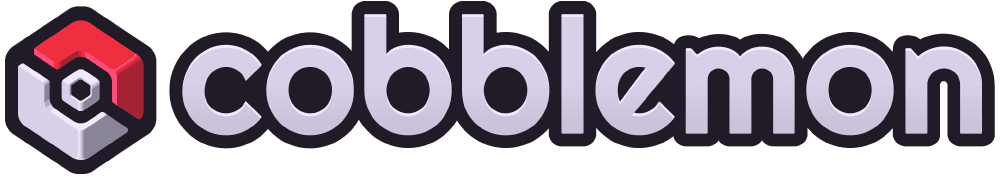
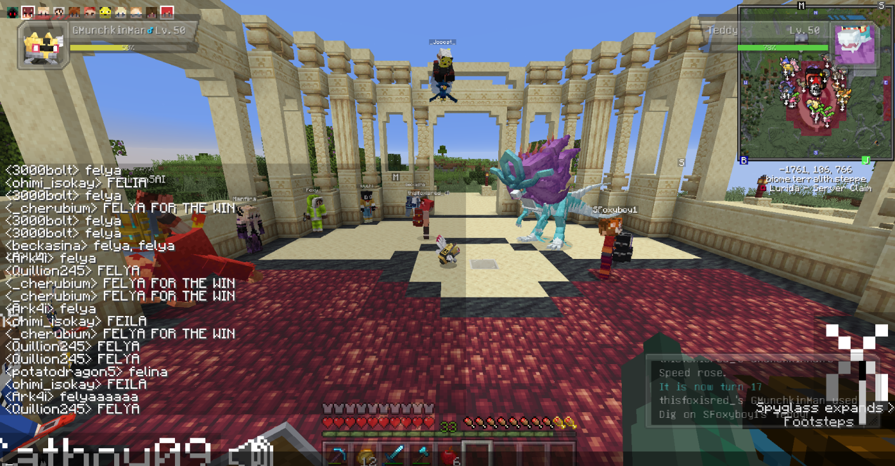
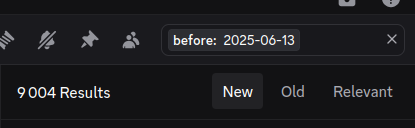
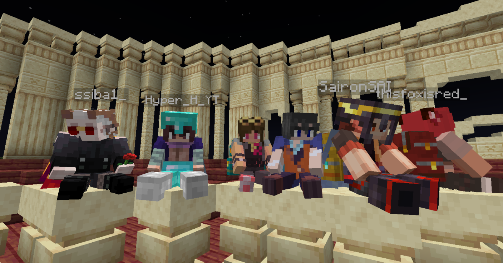
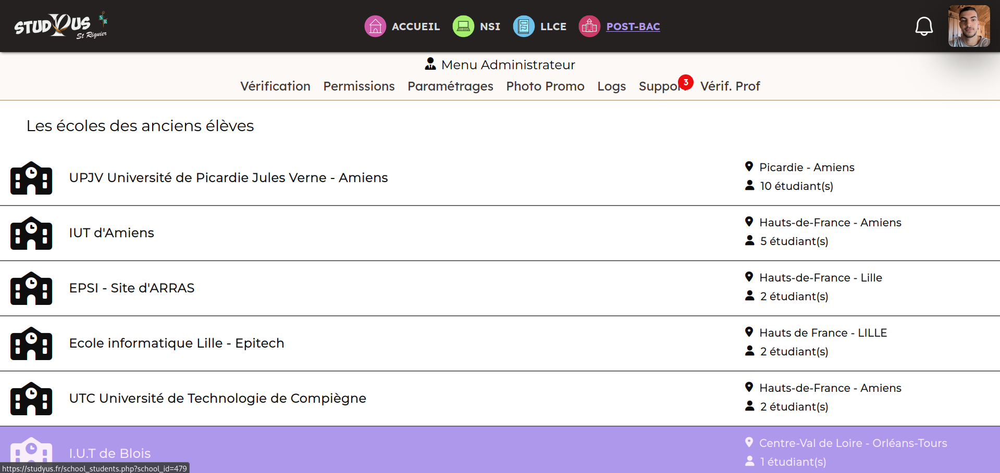
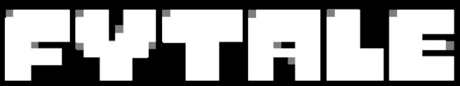
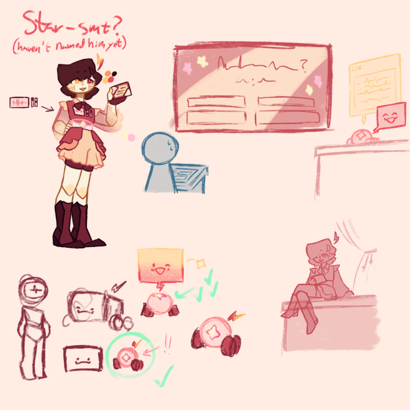
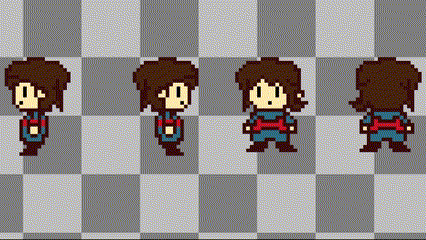
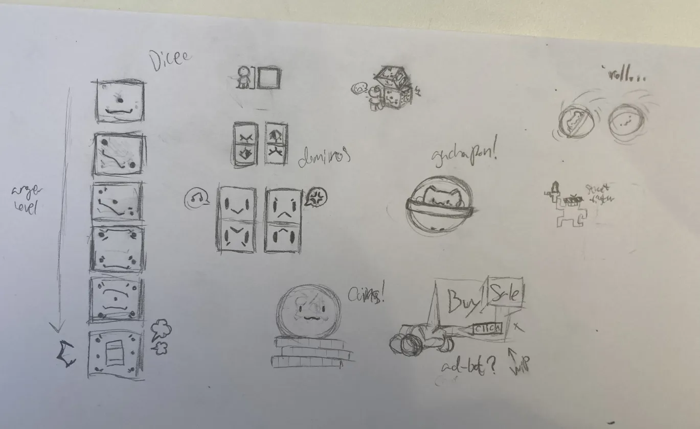

Description de la compétence
Conduire un projet :
L’étudiant a agi et il est mieux à même d’identifier ses aptitudes pour identifier les besoins métiers des clients et des utilisateurs car :
- Il sait identifier et différencier les besoins métiers des clients et des utilisateurs.
- Il énumère des outils de gestion de projet et les contextualise selon le problème.
- Il énumère les phases principales d'un projet, différencie maître d'œuvre et d'ouvrage, client et usager.
- Il propose les outils de développement en fonction de critères spécifiques.
- Il fait la différence entre cahier des charges et dossier de gestion de projet.
- Il s’adapte et s’autocritique.
Mes preuves
-
Projet : Cobblemon Organization
Compétences associées : 3, 5, 6
Preuve : Gestion d'un serveur Minecraft, images




Commentaire : J'ai organisé et animé une communauté, géré des plannings et résolu des conflits. -
Projet : Site internet Studyus
Compétences associées : 1, 4, 5, 6
Preuve : Démo sur demande

Commentaire : J'ai coordonné le projet, réparti les tâches et assuré la communication avec les utilisateurs. -
Projet : FyTale - Mod Undertale
Compétences associées : 1, 2, 5, 6
Preuve : Mod complet, images, assets graphiques




Commentaire : J'ai mené le projet de A à Z, de la conception à la réalisation, en gérant les imprévus.
Réflexion critique
Voici ce que j’ai appris grâce à cette compétence, les difficultés rencontrées, les solutions que j’ai trouvées, et comment je pourrais réutiliser ces savoirs dans d'autres contextes.
Adaptation à d’autres contextes
Cette compétence pourrait être mobilisée dans [autres contextes]. Par exemple, si je devais [...]